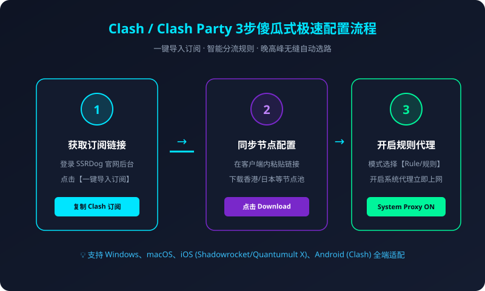

对于需要翻墙出海、浏览外网技术文献、从事外贸跨境电商或者使用 ChatGPT 等 AI 大模型的用户而言，一款高效、稳定、低资源占用的代理客户端至关重要。随着早期原版 Clash for Windows 项目的停止维护，2026 年新一代客户端呈现出多元化、高性能的发展趋势。其中，Clash Party 凭借极简的设计、极其轻量的系统资源占用以及对新一代 Clash 协议内核的原生支持，成为了当下 Windows 与 macOS 用户的不二之选。
本教程将以 ssrdog机场官网 提供的优质高速 IPLC 专线节点为例，带您从软件安装、订阅导入、分流模式选择，一直到晚高峰节点优选与常见错误排查，一步到位掌握科学上网的核心配置逻辑。

一、Clash Party 客户端核心特性与下载
Clash Party 是一款基于现代图形界面技术打造的代理规则配置器。相比于过去经常被用户诟病臃肿、占内存超过 500MB 的旧版客户端，Clash Party 拥有以下几个显著优势：
- 内存开销极低：空闲运行时内存仅占用 30MB-60MB，即使在老旧笔记本电脑上也能丝滑常驻后台。
- 现代化内核驱动：内嵌高性能 Mihomo/Meta 核心，原生支持 Trojan、Vless、Shadowsocks 以及最新的混合分流协议。
- 无广告无多余捆绑：纯净开源设计，界面扁平直观，拒绝任何后台弹窗干扰。
- 智能规则分流：自动精准识别国内外网站，国内直连不耗流量，海外受限网站走 SSRDog 专线。
二、从 SSRDog 官网获取高可用节点订阅
客户端只是网络流量的调度控制器，真正决定上网速度、延迟与稳定性的核心是背后的机场节点线路。为了保证全天候的稳定连接，我们推荐使用拥有物理端到端专线的 SSRDog 机场：
- 访问官方入口：进入 SSRDog 机场官网用户控制台。
- 根据自身用量选择合适的套餐并开通（如入门版或性价比极高的进阶畅享版）。
- 在用户首页仪表盘找到【快捷导入】区域，点击【复制 Clash 订阅链接】。请妥善保存此链接，避免泄露给他人。
尚未拥有 SSRDog 专线订阅？
享受 1000Mbps 极速跑满、晚高峰 0 丢包与 4K 秒开，点击直达官网专属通道。
三、Clash Party 客户端导入与配置全流程
在完成客户端安装与订阅链接复制后，只需三个简单步骤即可完成全套配置：
步骤 1：添加订阅配置（Profiles）
打开 Clash Party 客户端界面，在左侧导航栏中点击【Profiles (配置)】进入管理界面。点击右上角的【+ (Add)】按钮，在弹出的窗口中：
- Name (名称)：填入
SSRDog 专线（便于识别）。 - URL (地址)：粘贴刚才在 SSRDog 官网复制的 Clash 订阅链接。
- Auto Update (自动更新)：建议设置为
1440分钟（即 24 小时自动更新一次，确保节点最新）。
点击【Save & Download (保存并下载)】，客户端将立即从云端服务器拉取节点列表。下载成功后，勾选选中该配置文件前面的单选框使其生效。
步骤 2：选择代理节点与延迟测速
切换至左侧的【Proxies (代理)】界面，此时可以看到 SSRDog 提供的香港、日本、新加坡、美国、欧洲等不同地区的节点分组：
- 香港 (HK) 专线：物理距离最近，物理延迟通常在 18ms-35ms 之间，非常适合日常网页浏览、外贸客服交流以及即时通讯。
- 日本 / 新加坡专线：网络质量优异，是访问 YouTube、Netflix 以及 ChatGPT 等 AI 大模型的黄金线路。
- 美国 (US) 专线：适合访问仅限美区开放的特定学术文献数据库与金融商务服务。
点击右上角的闪电测速图标进行批量延迟检测，点击选择一个绿色毫秒数最低的优质节点。
步骤 3：选择分流模式并开启系统代理
在主界面中，您会看到三种主要的运行模式：
| 运行模式 | 网络分流行为 | 适用场景建议 |
|---|---|---|
| Rule (规则) | 国内网站直连走本地网络，海外受阻网站自动走专线 | 强烈推荐日常默认开启，省流量且国内应用不降速 |
| Global (全局) | 所有电脑出站流量无差别强制通过代理节点转发 | 仅用于调试特定冷门小众站点或规则未覆盖时临时使用 |
| Direct (直连) | 所有流量完全绕过代理，直接使用本地宽带上网 | 等同于关闭梯子加速功能 |
确认选定为【Rule (规则)】模式后，将主界面顶部的【System Proxy (系统代理)】开关拨至【ON (开启)】状态。此时打开浏览器访问 Google 或 YouTube，即可享受到极速翻墙出海体验！
四、高级调优：开启 TUN 模式接管系统全局流量
常规的系统代理（System Proxy）主要通过操作系统暴露的 HTTP/SOCKS 协议端口接管浏览器的 Web 流量。但如果您需要使用某些不遵循系统代理设置的软件（例如部分原生桌面版客户端、命令行 Git、代码编译器或国际服游戏），普通模式可能会失效。
此时，您可以利用 Clash Party 的 TUN 模式。TUN 模式会在操作系统内部创建一个虚拟网卡，从底层驱动级别劫持所有 TCP/UDP 流量并自动转发进代理专线，彻底杜绝任何“漏网之鱼”，让终端命令与桌面软件获得真正的透明加速。
五、常见问题与故障排除排查指南
请依次排查：1. 确认系统当前时间是否精确对齐；2. 订阅链接中是否包含多余的空格或乱码；3. 本地网络是否对机场订阅 API 域名存在阻断，可在浏览器中尝试直接打开订阅链接看能否下载 YAML 文本文件。
请检查您是否错误勾选了【Global (全局)】模式。请切换回【Rule (规则)】分流模式，规则模式内嵌了包含 GeoIP 和 Mainland China 白名单数据库，保证国内应用全部走直连。
当机场进行服务器热迁移或日常割接维护时，个别备用节点可能会短暂离线。SSRDog 节点池具备多路容灾备份，通常只需选择其他在线的香港或日本专线节点即可，完全不影响实际使用。
六、结语与总结
通过本文的实操指引，相信您已经完全掌握了利用 Clash Party 配合 SSRDog 优质专线实现高速科学上网的完整技能。一个优秀的机场结合轻便好用的客户端，不仅能提升工作与学术效率，更能为您打开无缝畅享全球互联网的广阔窗口。